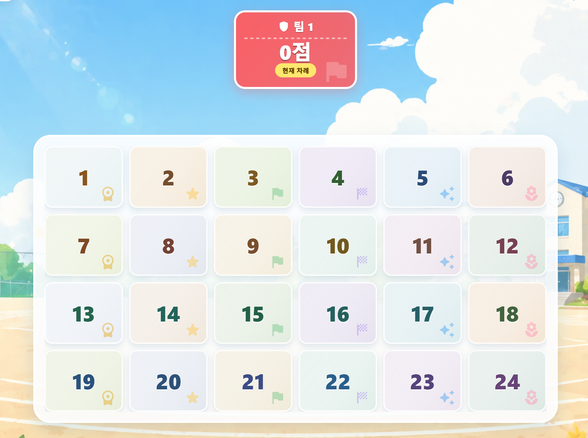

← 목록으로
Program Guide
미니노리
전자칠판에서 학급 전체가 함께 즐기는 팀 대결·학습 퀴즈 게임입니다. 구구단, 기억력, 초 세기, 바구니 슛 등 짧은 미니게임을 수업이나 창체 시간에 활용할 수 있습니다.
최신 버전 1.2.0 · 2026.10.13 업데이트 · Windows 설치파일 약 92 MB

어떤 활동을 할 수 있나요?
- 미니게임천국: 팀별로 게임 카드를 골라 대결합니다. 학생 이름을 입력하지 않는 빠른 시작에서는 팀마다 동물 마스코트가 배정됩니다. 팀 구성을 저장하고 다시 불러올 수도 있습니다.
- 학습 미니게임: 구구단, 곱셈·나눗셈 연산맨, 각도맨, 단어 짝맞추기와 기억력 게임을 제공합니다. 초 세기 챌린지와 바구니 슛도 함께 즐길 수 있습니다.
- 놀이터: 팀 대결을 준비하지 않고 원하는 미니게임을 바로 체험할 수 있습니다.
- 나만의 퀴즈세트: 객관식과 단어 짝맞추기 문제를 세트별로 정리하고, 팀 편성 화면에서 퀴즈 비율과 게임 배치를 조정합니다.
- 학생·이미지 관리: 학생에게 이미지를 배정하고, 등록 이미지를 카테고리별로 정리하거나 여러 장을 함께 이동·삭제할 수 있습니다.
- 시나리오 모드: 이야기와 몬스터를 따라 도전합니다. 납량특집의 자정의 학교, 귀신들의 전승록, 열세 번째 계단 시나리오도 선택할 수 있습니다.
업데이트 내역
v1.2.0 · 2026.10.13
- 등록한 퀴즈가 게임에 보이도록 수정: 퀴즈 편집기와 미니게임이 공통 퀴즈 목록을 사용합니다. 이전에 시나리오별로 저장됐던 등록 퀴즈도 공통 목록으로 가져오며, 원래 파일은 보존합니다.
- PDF 페이지를 개별 이미지로 복사: 8쪽을 선택하면 합친 이미지가 아니라 8장의 페이지 이미지를 복사합니다. Chrome의 Gemini에서 여러 장을 각각 첨부하는 흐름을 확인했습니다.
- AI 퀴즈 가져오기를 한곳에서: 퀴즈 일괄입력과 단어 짝맞추기 창에서 주제·문항 수·번역 언어를 정하고, 프롬프트 복사 → AI에 입력 → 결과 복사 → 붙여넣기 → 퀴즈 생성으로 이어집니다.
- 편집 메뉴 정리: 상단의 별도 퀴즈 자동생성 영역을 없애고, 교과서 PDF로 퀴즈 만들기를 왼쪽 아래 메뉴에 함께 배치했습니다.
- 선택지를 보며 퀴즈 검토: PC 화면에서는 문제를 왼쪽에, 선택지를 오른쪽 2×2 배열로 보여 줍니다. 정답은 초록색으로 강조하고 번역·해설도 함께 확인할 수 있습니다.
- 납량특집 시나리오 확대: 한국과 세계의 전승을 바탕으로 만든 귀신·괴물 이미지와 퀴즈를 추가했습니다. 열세 번째 계단에서는 교사가 학습 도전의 종류를 정할 수 있습니다.
v1.1.0 · 2026.10.03
- 교과서 PDF에서 페이지를 골라 Gemini·ChatGPT를 통해 객관식 퀴즈를 만드는 기능을 추가했습니다.
- 객관식 문제의 번역과 정답 뒤 개념 설명을 표시합니다.
- 짝맞추기 카드에 외국어 번역과 한국어 뜻을 함께 표시합니다.
시작하는 방법
- Windows 설치파일을 내려받아 설치한 뒤 미니노리를 실행합니다. 업데이트할 때는 실행 중인 미니노리를 먼저 종료하세요.
- 바로 팀게임을 하려면 미니게임천국의 팀 편성 화면에서 ‘학생 이름 없이’를 체크하고 팀 수와 인원을 정합니다.
- 퀴즈를 준비하지 않았다면 ‘빠른 게임 세팅’으로 구구단·기억력·초 세기 게임을 배치할 수 있습니다.
- 수업 내용으로 게임을 하려면 퀴즈 편집에서 세트를 만들고, 팀 편성 화면의 사이드바에서 사용할 세트와 비율을 정합니다.
- 교과서 PDF를 사용할 때는 왼쪽 아래 ‘교과서 PDF로 퀴즈 만들기’를 열어 페이지를 선택합니다. AI에 프롬프트와 페이지 이미지를 붙여넣고, 돌아온 결과를 퀴즈로 불러옵니다.
설치파일에 코드 서명이 없어 Windows의 ‘PC 보호’ 안내가 나타날 수 있습니다. 파일명을 확인한 뒤 ‘추가 정보 → 실행’을 선택하면 설치할 수 있습니다.